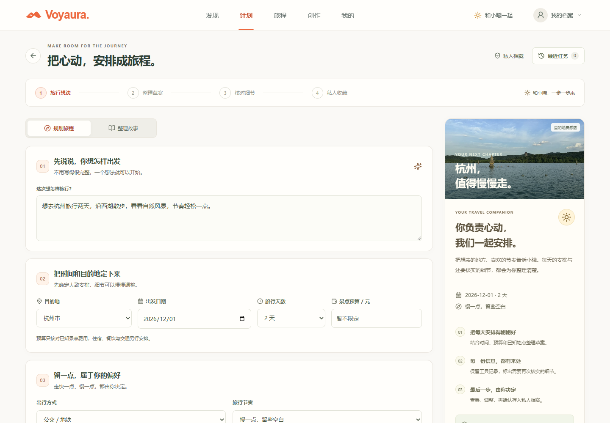
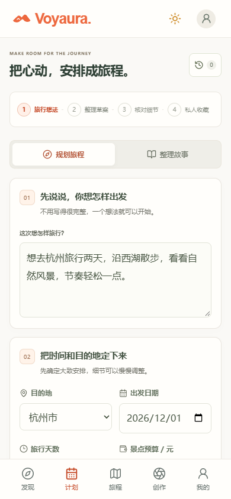

桌面

沿用已选定的 A 方案，重做规划输入、真实执行状态和行程结果。此页切换的是 Chrome 实际运行截图；结果中的地点为明确标注的本地验收输入。可通过下方入口操作真实系统。
下方按钮只切换实测截图，不会在产品中创建任务。要实际操作，请打开真实规划页，点击“填入离线演练条件”→“开始演练”，再体验地图、执行记录和确认保存。打开真实规划页 → · 查看体验步骤


四种屏宽均检查输入页与结果页的滚动容器，无横向溢出。
平板输入截图 · 平板结果截图 · 320 像素输入截图 · 320 像素结果截图私人流程继续使用本机访问令牌；此审阅页不包含凭证。未配置高德时地图明确显示“地点坐标示意 · 非导航底图”，不代表已完成在线地图或模型联调。第三轮旅程／创作改稿尚未实施。